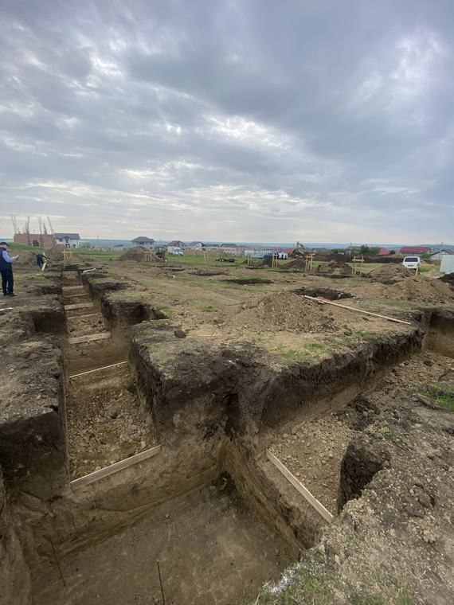
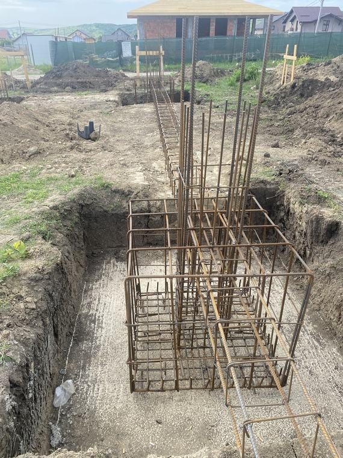
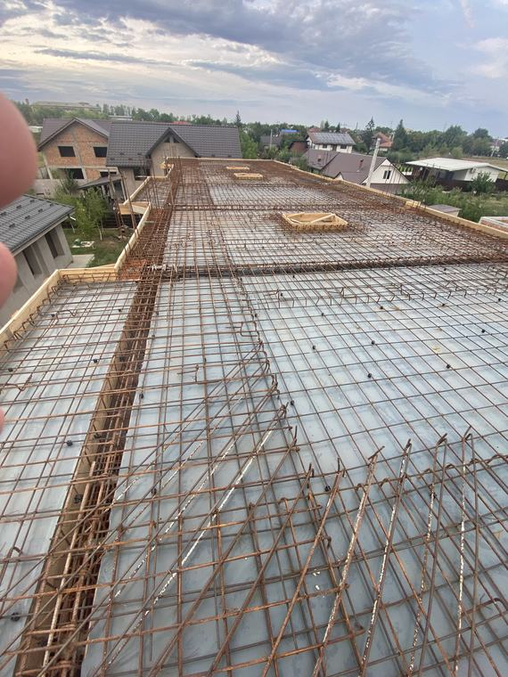
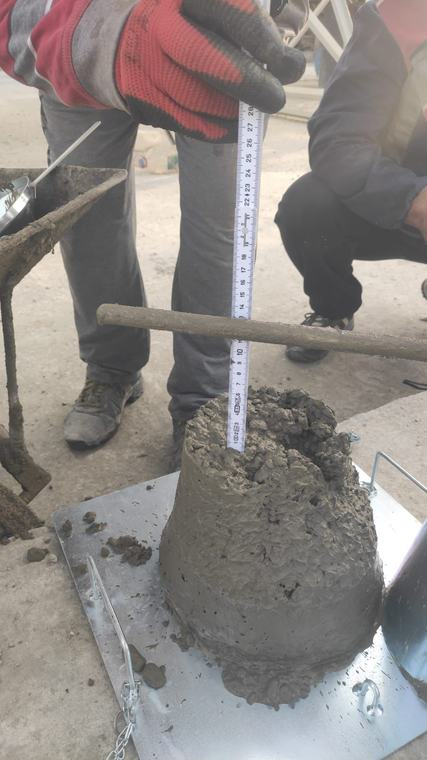

Dirigintele de șantier reprezintă beneficiarul în raport cu constructorul și răspunde de
verificarea calității execuției. Este o funcție reglementată, care se poate exercita doar
pe baza autorizației emise de Inspectoratul de Stat în Construcții.
În echipă avem diriginte de șantier autorizat de Inspectoratul de Stat în
Construcții. Domeniile acoperite de autorizare vi le confirmăm când ne spuneți ce fel de
lucrare aveți.
Ce face un diriginte de șantier
Verifică existența autorizației de construire și respectarea condițiilor din ea;
Verifică proiectul și existența referatelor verificatorilor de proiect pe cerințele impuse;
Predă amplasamentul către constructor și participă la trasarea lucrării;
Urmărește execuția și verifică respectarea proiectului, a normativelor și a tehnologiilor de execuție;
Verifică materialele și produsele puse în operă, împreună cu documentele lor de conformitate;
Participă la fazele determinante și convoacă factorii implicați, inclusiv reprezentantul I.S.C.;
Oprește execuția atunci când constată abateri care afectează calitatea sau siguranța;
Întocmește și completează cartea tehnică a construcției pe parcursul execuției;
Participă la recepția la terminarea lucrărilor și urmărește remedierea deficiențelor consemnate.
Când este obligatoriu. Legea impune asigurarea diriginției de șantier pentru
categorii largi de lucrări, iar lipsa ei atrage sancțiuni și poate bloca recepția. Dacă nu
sunteți sigur dacă lucrarea dumneavoastră intră în această categorie, trimiteți-ne autorizația
de construire și vă spunem.
Ce câștigați concret
Un dosar care trece recepția. Cartea tehnică se construiește pe parcurs, nu se improvizează la final;
Erorile se prind devreme, cât mai pot fi corectate fără demolări;
Plățile corespund lucrărilor efectiv executate, verificate înainte de decontare;
Aveți un interlocutor tehnic care vorbește cu constructorul în termenii lui.
Ce trebuie să ne trimiteți ca să vă dăm o ofertă
Autorizația de construire și proiectul autorizat;
Localitatea și amplasamentul lucrării;
Valoarea estimată și durata de execuție;
Stadiul actual, dacă lucrarea a început deja.
Dacă lucrarea include instalații de ridicat sau instalații sub presiune, putem acoperi și partea
ISCIR — vedeți RSVTI și RVT.
De pe șantier
Patru momente din verificările curente — genul de etape la care trebuie să fie cineva prezent.

Săpătura, verificată înainte de turnare: cota de fundare, natura terenului și trasarea pe teren.

Armătura fundației, înainte să dispară sub beton. Odată turnat, nu se mai vede și nu se mai poate corecta.

Placă pregătită de turnare: plase, distanțieri, goluri lăsate pentru instalații.

Proba de tasare, la sosirea betonului. Se verifică consistența comandată, nu doar bonul de livrare.